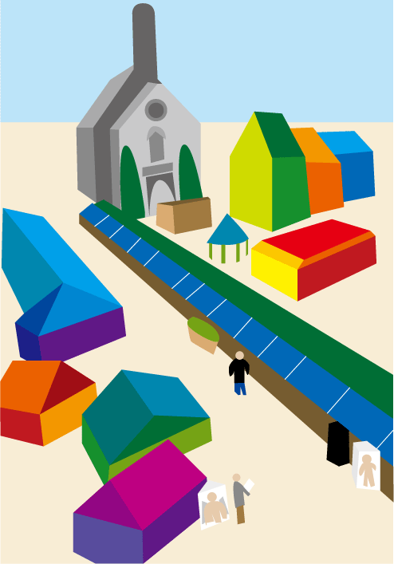

パース・遠近法・透視図法の世界観です。
以下の内容は、僕自身がデザインの作業所で見習いとして学び経験したことに基づきます。書いている当時がとても未熟であったため、誤解や勘違いが多くあります。
作業所の同僚やスタッフにも多くのことを教えていただきました。
透視図法とは、対象物と自分の見ている目線との間に「透明な板」（たとえばガラス板）があると想定し、その透明な板に写るような絵を描いていくことで、パースのついた正確な絵を描くことができる、という遠近法の方法です。
まず、景色を正面から見た正面図を描く前に、正面図の上に上面図（真上から見た図）、正面図の右に側面図（真横から見た図）を描きます。
上面図では、対象物を真上から見た図と、ガラス板を表す線、そして目線を表す点を描きます。
側面図にも、対象物を真横から見た図と、ガラス板を表す線、そして目線を表す点を描きます。
そして、上面図と側面図で、対象物の輪郭上のひとつひとつの頂点（対象物の形を表すひとつひとつの点）から、目線を表す点へと伸びていくような直線を引き、ガラス板の線を通るところを点に取ります。
このガラス板上の点が、正面図において、どれくらいの左右あるいは上下の位置にその頂点が来るかを表しています。
そして、正面図において、この点の位置を繋いだ形を描きます。
これがガラス板に写った対象物の絵を描く方法です。
透視図法では、消失点という考え方をします。消失点へと伸びていく線を描くことで、風景や景色をパースのついた綺麗な辺で描くことができます。
消失点とは、対象物が際限なく無限に離れていった時、それが点となって消失する場所のことであり、水平線上にあります。
消失点は、また、人間の目線の高さと同じ場所にあります（一点透視図法と二点透視図法の場合）。この理由は、対象物を上から見下ろした場合、同じ高さであっても遠くの場所の点は近くの場所の点よりもガラス板上で点の場所が上に位置します。これは頂点から目線に線を引いた時、頂点が目線から離れれば離れるほど、ガラス板を通る点の高さが少しずつ上に上がっていくからです。離れれば離れるほど、高さは少しずつ上へと上がっていき、無限に上がっていくと目線と同じ高さになるのです。
一点透視図法では、対象物たとえば立方体を真正面から描いた時の透視図法で、一点しか消失点がありません。消失点は水平線上にあります。この時、高さ・幅・奥行きの三次元の物体を表した場合、奥行きは消失点へと向かっていきます。たくさんの奥行きの直線があったとき、それは円の中のひとつの角度のように、ひとつの消失点へと向かって伸びていきます。
二点透視図法は、対象物を左右に回転して見た時の透視図法で、水平線の右と左に二点の消失点があります。この場合、幅と奥行きがそれぞれの消失点へと向かって伸びていきます。
三点透視図法は、対象物を上下左右に回転して見た時の透視図法です。三つ目の消失点は下のほうにあります。幅・高さ・奥行きのすべてが消失点に向かって伸びていきます。
（詳しくは、風景デッサンの基本 (ナツメ社Artマスター)が参考になります。）
透視図法とは遠近法（パース）の描き方。
まず、人間の視点（アイレベル）の上の消失点（どんどん遠くなっていって最後に点になって消える地点）を想定します。
そこまでの奥行きの直線が円のように角度を変えて伸びていき、それがものの輪郭を決める等間隔の線となります。
透視図法で輪郭線を描くと、町の風景などをとても綺麗に描くことができます。
僕がよく使うのは、二点透視図法です。風景のもっとも後ろにある消失点を、まず右と左に設定します。そして、このキャンバスの中で輪郭線を描くものは、「高さ」を除いて、「奥行き」と「幅」をその2点の消失点に向かうように、角度をつけて描きます。
これだけで、パースのついた綺麗な絵になります。
奥行きだけを消失点に向かって描く方法を一点透視図法、高さも含めて消失点を3点とる方法を三点透視図法と言います。
以下は自分の描いた透視図法によるイラストです。

風景の二軸の横の線である奥行と幅が、上の方にある左と右の二点の消失点に向かって、円のように角度を変えて伸びていっているのが分かると思います。
「風景デッサンの基本 (ナツメ社Artマスター)」に載っている「透視図法」は、パース（遠近法）の基本です。これが分かるだけで、がらっと「上手い絵」が描けるようになります。
水平線（一番遠いポイント）はアイレベル（見ている観測者の目線の位置）の上の消失点（ものがどんどん遠くなっていって、最後に点になって消える地点）が生まれますが、それに対する奥行きの直線として、等間隔ずつ、建物や人物などのものが離れていきます。
この消失点が１つのものを一点透視図法（普通はこれを使う）、２つのものを二点透視図法（立体感がある建物や室内の時に使う）、３つのものを三点透視図法（フカンやアオリなど特殊な場合に使う）と言います。
そして、自分の前に透明なガラス板があって、そこに、映る対象のものをインクで描いていくような感覚で、三次元を二次元に直して絵を描いていきます。
以下のリンクが参考になります。
僕は、今（2017.01.20）、パースの勉強をしています。
漫画やイラストでは、二点透視図法を使うことが多いようです。
僕の理解では、一点透視図法では、奥行きを消失点として表現します。
奥行きへと向かう線を消失点へと向かって描画します。
二点では奥行きと幅、三点では奥行きと幅と高さが消失点に向かうように決まります。
以下のリンクが参考になります。
もっと透視図法について知りたい方は以下のような入門サイトが参考になる。
人物画のパースについては以下のようなサイトが参考になる。
以下は「風景デッサンの基本」の著者、湯浅誠さんのX（旧ツイッター）のアカウント。
2026.01.05
書籍